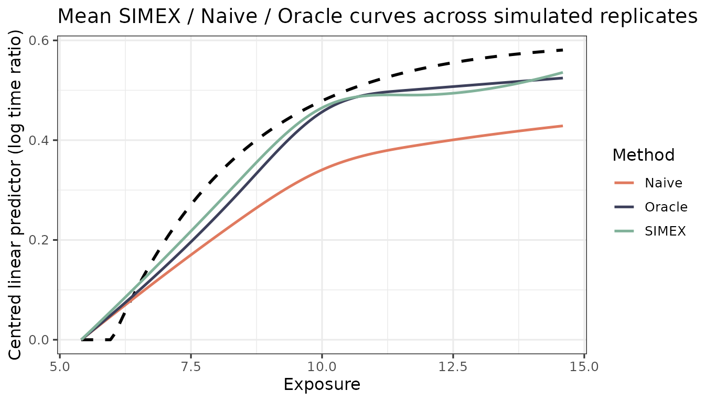

Simulation study: Oracle vs Naive vs SIMEX
Source:vignettes/simulation-study.Rmd
simulation-study.RmdA small Monte Carlo replicating the structure of the manuscript
appendix simulation. Three estimators are compared on the same
r replicates:
-
Oracle – fits on the true latent exposure
X_true(an upper bound). -
Naive – fits on the GLS-combined surrogate
W_barwithout ME correction. -
SIMEX – fits on
W_barwith the SIMEX correction.
The vignette uses N_REP = 20 replicates so it builds in
under a minute; the manuscript figure uses 500. Set N_REP
higher locally to reproduce.
library(aftsplex)
N_REP <- 20L
N <- 1500
N_VAL <- 400
B_INNER <- 10
DF <- 4
LAMBDA <- c(0.5, 1, 1.5, 2)
x_grid <- seq(qnorm(0.02, 10, sqrt(5)),
qnorm(0.98, 10, sqrt(5)),
length.out = 100)
truth <- f_true(x_grid) - f_true(x_grid[1])
V_REF <- c(V1 = 30, V2 = 30, V3 = 0, V4 = 0)Single-replicate driver
run_one <- function(seed) {
sim <- generate_aft_data(n = N, n_val = N_VAL, seed = seed)
cal <- fit_me_calibration(sim$validation)
W <- as.matrix(sim$survival[, cal$W_cols])
g <- gls_combine(W, cal)
dat <- sim$survival
dat$W_bar <- g$W_bar
fit_oracle <- fit_aft_spline(dat, "X_true",
covariates = names(V_REF), df = DF)
fit_naive <- fit_aft_spline(dat, "W_bar",
covariates = names(V_REF), df = DF)
lp_oracle <- predict_curve(fit_oracle, x_grid, V_REF, "X_true")
lp_naive <- predict_curve(fit_naive, x_grid, V_REF, "W_bar")
s <- simex_aft_spline(dat, x_var = "W_bar",
sigma_w_sq = g$sigma_w_sq,
covariates = names(V_REF), v_ref = V_REF,
lambda = LAMBDA, B = B_INNER,
x_grid = x_grid)
list(Oracle = lp_oracle - lp_oracle[1],
Naive = lp_naive - lp_naive[1],
SIMEX = s$curve_simex)
}Run the Monte Carlo
t0 <- Sys.time()
res <- lapply(seq_len(N_REP), function(i) run_one(20260601L + i))
elapsed <- Sys.time() - t0
elapsed
#> Time difference of 15.61238 secsISE summary
methods <- c("Oracle", "Naive", "SIMEX")
ise_mat <- sapply(res, function(r)
vapply(methods, function(m) {
e <- r[[m]] - truth
delta_x <- diff(x_grid)
sum(((e[-1] + e[-length(e)])^2 / 4) * delta_x)
}, numeric(1))
)
rownames(ise_mat) <- methods
data.frame(
Mean = round(rowMeans(ise_mat), 3),
MCSE = round(apply(ise_mat, 1, sd) / sqrt(N_REP), 4),
Median = round(apply(ise_mat, 1, median), 3)
)
#> Mean MCSE Median
#> Oracle 0.065 0.0108 0.043
#> Naive 0.181 0.0254 0.140
#> SIMEX 0.084 0.0162 0.057The pattern matches the manuscript: Naive carries 2-3x the ISE of Oracle (attenuation), and SIMEX recovers most of that gap.
Mean curves
mean_curve <- function(m) rowMeans(sapply(res, function(r) r[[m]]))
fits <- setNames(lapply(methods, mean_curve), methods)
plot_curves(x_grid, truth, fits,
title = "Mean SIMEX / Naive / Oracle curves across simulated replicates")